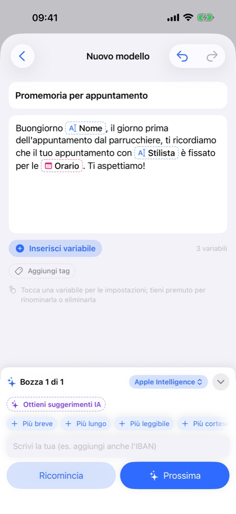
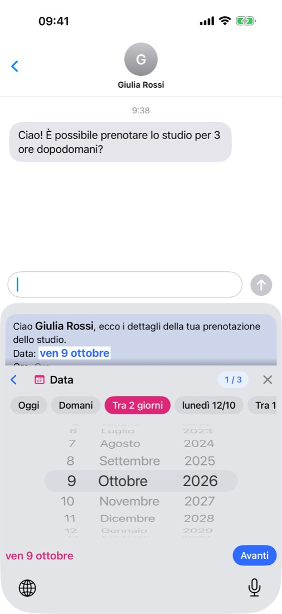
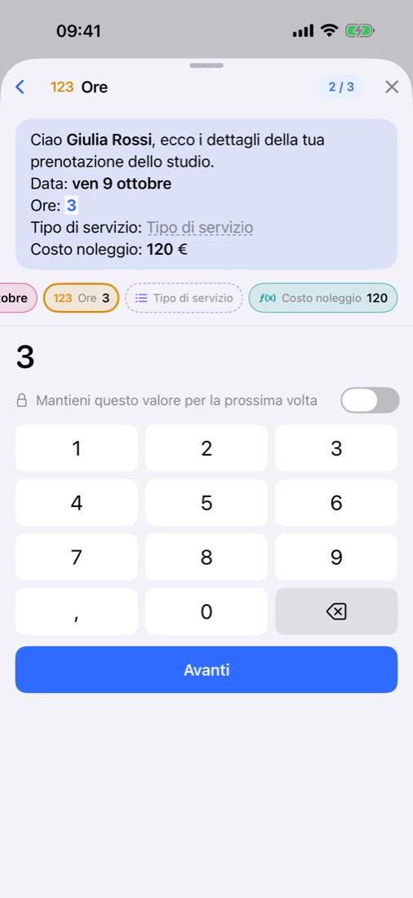
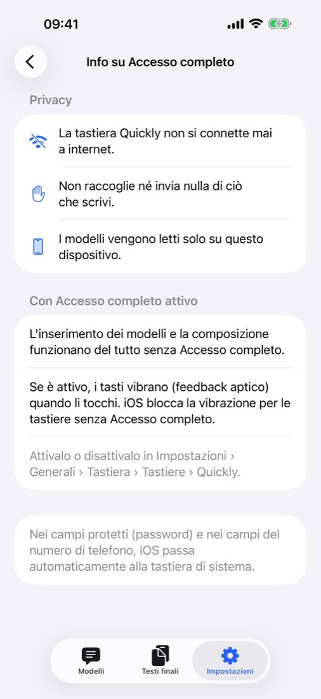

Il messaggio lo scrive l’IA.
Tu compili ciò che cambia.
Scrivi una riga e l’IA prepara il messaggio, lasciando da completare le parti che cambiano ogni volta, come un nome, una data o un importo. Quando invii, compili solo quelle dalla tastiera Quickly, in qualsiasi app.
Presto su App StoreGratis · Senza pubblicità · iOS 18 o versioni successive · iPhone · iPad

Scrivi, compila, invia.



Tutto quello che serve, già dentro.
Descrivi la situazione in una riga o incolla un messaggio che mandi già: torna con le parti che cambiano come variabili. Rifiniscilo con “Più breve” o “Più cortese”.
Apple Intelligence sul dispositivo e gratis, la tua app ChatGPT, Claude o Gemini, oppure la tua chiave API. O scrivi da te, senza IA.
In Messaggi, Mail o nella tua app di chat, scegli un modello e compila i valori. E scrivi normalmente, in 11 lingue.
Domani o questo sabato con un tocco, importi con il simbolo della valuta già inserito e formule che calcolano il totale.
Ogni messaggio compilato resta in “Testi finali”, pronto da riusare. Organizza con i tag e cerca per titolo o contenuto.
Modelli, tag e testi finali restano sincronizzati sui dispositivi con lo stesso account iCloud. Esporta un backup quando vuoi. Modalità chiara e scura.
Vengono salvati solo sul tuo dispositivo e nel tuo iCloud, dove nemmeno lo sviluppatore può vederli. Nessuna registrazione, niente pubblicità né tracciamento, e la tastiera non va mai online — Privacy